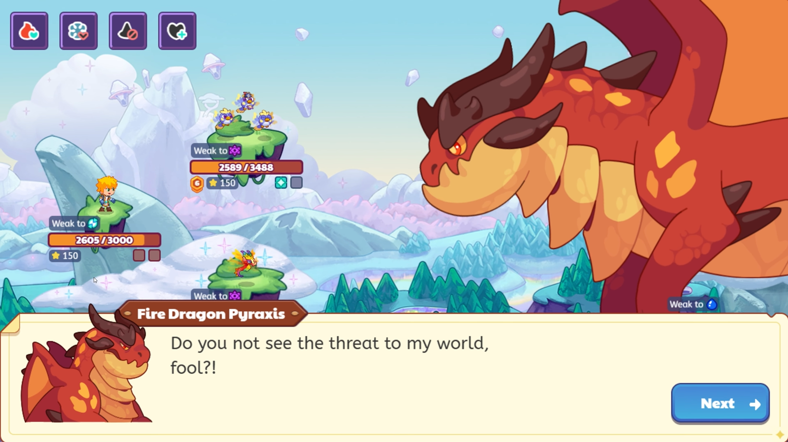
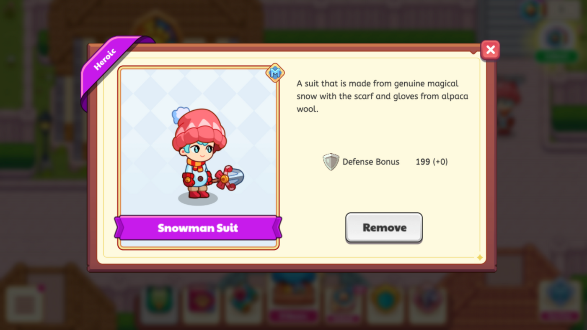

|
Example of implementing the narrative flow of a festival, including new cutscenes, dialogue, voice-overs and progress logic. Source: Mr. Inquiry |

Creating boss encounters that incorporate dialogue, voice overs and quest progression Source: Mr. Inquiry |
|
|---|---|---|
|

Created and tested festival gear (Winterfest 2025) |
Example of a UI/UX change, directing players towards collecting daily premium currency |